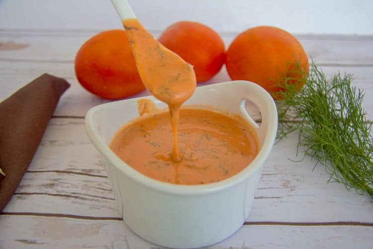
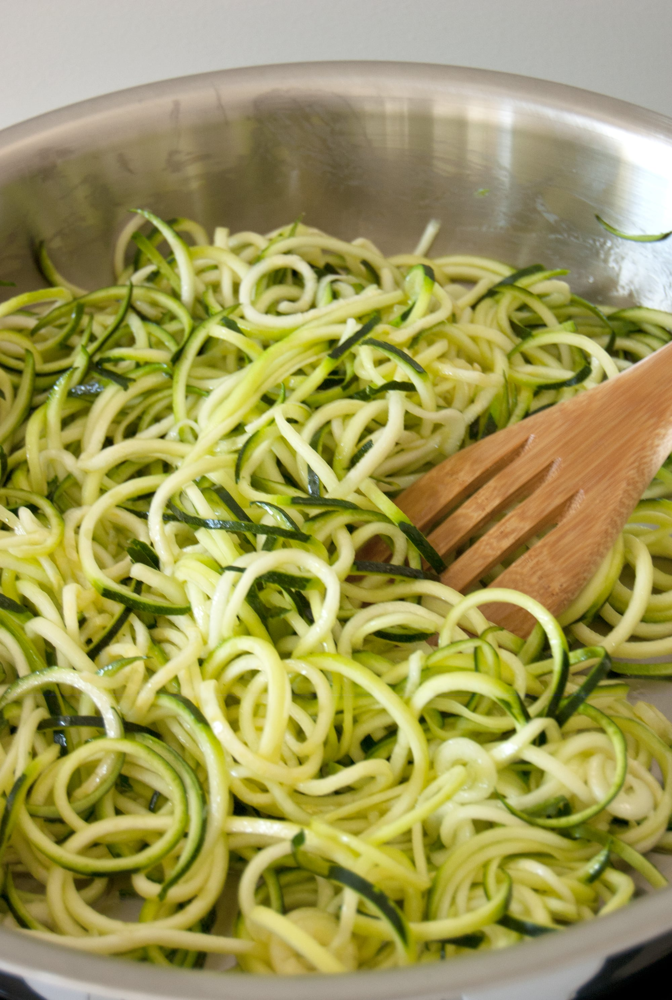

Creamy tomato courgetti
A very quick and yummy pasta dish that will fill you up after a hard days work!
Step 1
Roughly tear the ham and basil.
Heat a frying pan over a medium heat and dry-fry the ham until crisp.
Step 2
Transfer to a plate with a slotted spoon. Add the sauce to the pan and cook for 1-2 mins,
Step 3
Toss in the courgetti. Cook for 1 min more until warmed through.
Step 4
Divide between bowls, then top with the ham and basil.